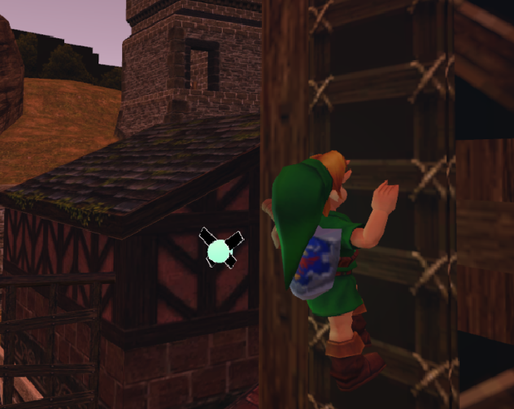
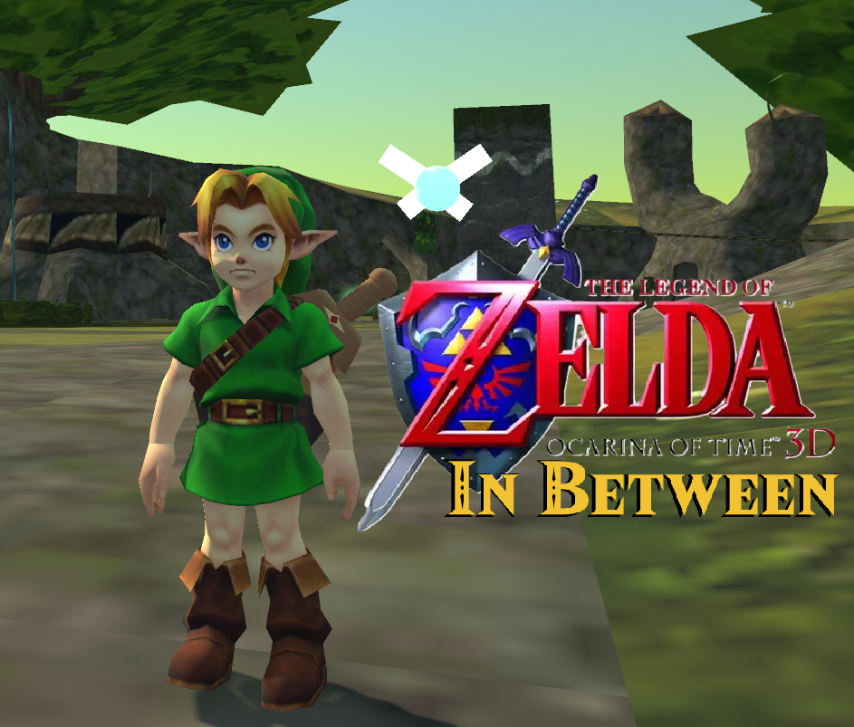

November Newsletter!
11/15/2026

Well, November has been pretty busy!
I've been working on a few different things this month, apparently found excuse to make another Zelda type game.
So, let's go through what's been happening!
OOT-IB IS OUT!

For those who haven't seen it yet, OOT-IB is a little Unity project where I attempt to combine elements from Ocarina of Time 3D and the Nintendo Switch 2 remake.
You can explore a few familiar locations, mess around with the player controls, use your sword and shield, change your tunic, and a few other things!
This project actually started as a pretty simple experiment for the release of the new Switch 2 remake. I also wanted to learn how to properly implement 3D animations in Unity, and I thought making a little Zelda-inspired project would be a fun way to do that.
And, well...
It's definitely not perfect. Some items don't actually work, there are a few unfinished features, and there's not a whole lot to do.
But that's okay! It was never supposed to be some massive new game.
I mainly made this because I love Zelda, and I wanted to make something of my own with it.
You can play OOT-IB here!
PLAY OOT-IB
If you're interested in how I made it, I've also written a full development log documenting the process, from the first player animations to the final release.
READ THE DEVELOPMENT LOG
What's Next?
Now that OOT-IB is out, I don't really have any major plans for it.
Again, this was mostly a test project, and I'm pretty happy with where it ended up.
I'll probably move on to some other things for now, but who knows? Maybe I'll come back and add a few more things eventually.
I've also been spending some time thinking about other projects, so there's definitely more stuff coming!
about coldfront.....
yea I honestly forgot about that...
my bad.
Something Weird...
Okay, so...
I was going through the website recently, just checking a few things and making sure everything was working.
And I noticed something.
I'm not entirely sure what happened, but there's something on the website that definitely wasn't supposed to be there.
I checked a few things, refreshed the page, and... well, it's still there.
It's on the home page... do you see it?
I managed to find the proper inputs after clicking it.
.. the code? well I wont just tell you. Heres a riddle!
"Count the flames on a candlestick, the legs on a chair, the sides of a triangle, and the wheels on a bicycle."
In that order.
Surely that's enough of a hint?
..
I'll just leave the rest to you!
That's About It!
That's pretty much everything for November!
OOT-IB is out, I've learned a bunch of new things in Unity, and I've got a few more ideas floating around for future projects.
See ya
← Back to Blog